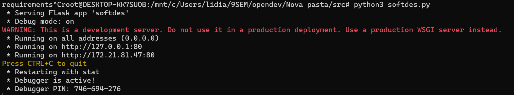

Skill3 lidiaacd anandajgc guilhermefl3
About the Application
This application is a web-based platform designed to facilitate the student assignment submission and feedback process for a Software Design (SoftDes) course, specifically labeled as "SoftDes 2018.2." It showcases an example page for "Challenge 1," where the critical functionalities include viewing problem statements, submission deadlines, and feedback/results of submitted assignments. The application features a login functionality so that the users only login with the correct password
The application is built using Flask, a lightweight WSGI web application framework in Python. Flask is known for being simple to set up and flexible, making it ideal for small to medium-sized applications. The platform uses SQL for managing its database operations. SQL databases are robust, allowing for complex queries and transactions necessary for managing course data, assignments, user accounts, submission records, feedback, and results.
Language:
- Python
Libraries:
- flask:
- Flask
- request
- jsonify
- abort
- make_response
- session
- render_template
- flask_httpauth: Extensão para autenticação HTTP básica.
- HTTPBasicAuth
- datetime: Módulo para manipulação de datas e horas.
- datetime
- sqlite3: Módulo para interação com bancos de dados SQLite.
- sqlite3
- json: Módulo para manipulação de dados JSON.
- json
- hashlib: Módulo para algoritmos de hash seguros.
- hashlib
QuickStart
- Requirements:
Certifique-se de que SQLite3 está instalado no seu sistema.
- macOS:
brew install sqlite3 - Linux (Debian-based, ex.: Ubuntu):
sudo apt-get install sqlite3
-
Linux (Fedora-based):
sudo dnf install sqlite -
Windows: Baixe o SQLite3 e adicione o binário ao seu PATH.
-
Install the dependencies
pip install flask flask-httpauth
- Create the database
sqlite3 quiz.db < quiz.sql
-
Create the users.csv with your credentials. Example:
admin,admin -
Add your user.
python adduser.py
- Start the development server:
python softdes.py
Now you can see in the terminal something like this: 
If you open the url, you should see this screen: